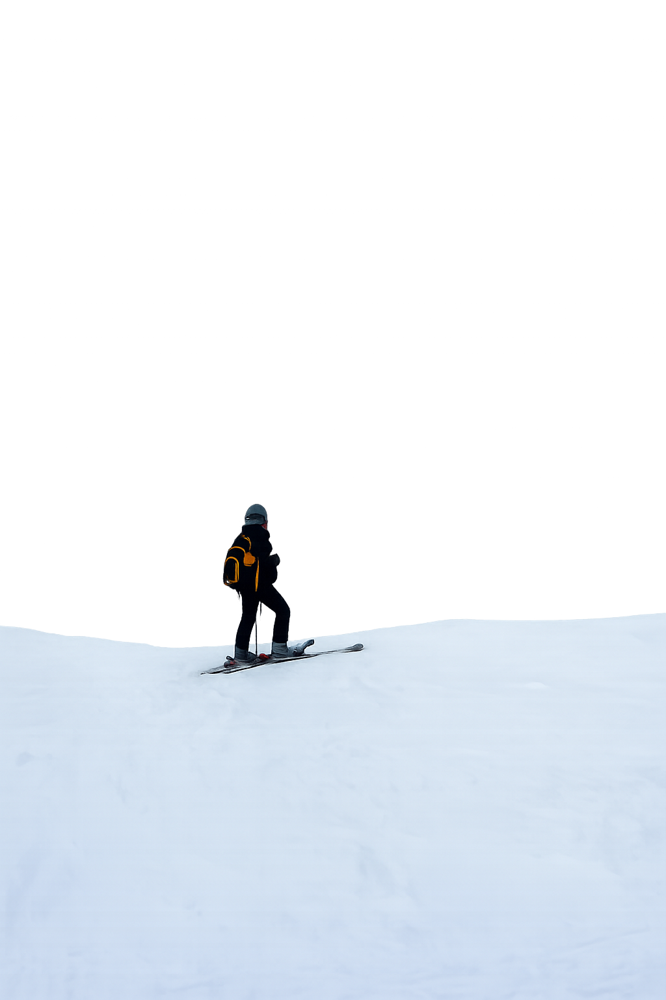
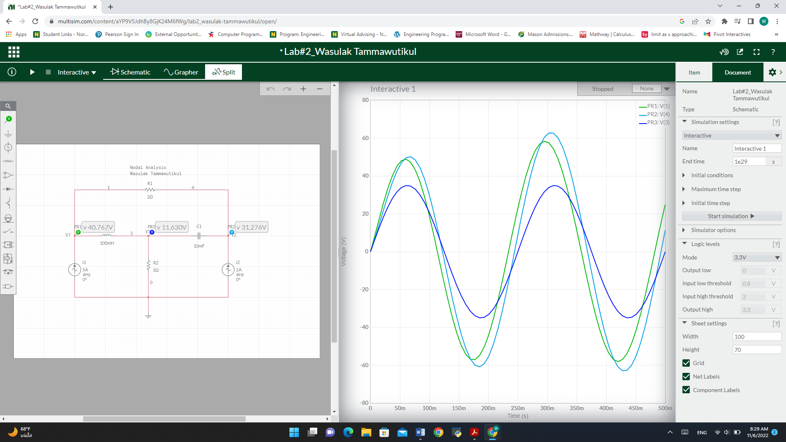

Wasulak
Tammawutikul

About Me
I recently graduated from George Mason University with a Bachelor’s degree in Computer Science, earning a 3.82 GPA. Based near Washington, D.C., I am currently seeking my first full-time opportunity where I can apply my skills and continue growing as a software engineer.
Progaming has been my passion, especially the challenge of solving problems and building systems that are both practical and impactful. I am most comfortable working with Python, and I also have experience with C and Java. In addition, I have worked with various software tools such as MongoDB, Android Studio, and Firebase.
Beside programming, I enjoy rock climbing, weight lifting, hiking and travel. Rock climbing is like problem solving, I enjoy figuring out what moves would help get the top. For hiking, I mostly seek for sunrise and sunset. It feels like a huge reward once you get to the top.

Projects
In progress ...